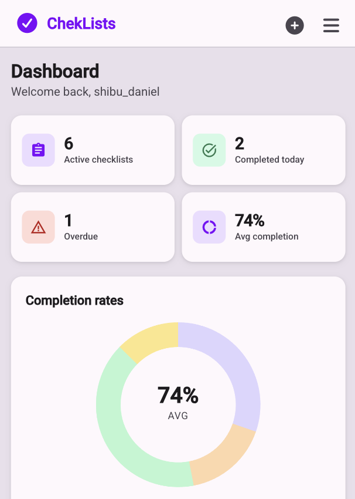

Checklists
App to manage recurring tasks based on a checklist. It can be configured for a Practice or for Personal level.
Tools
- Notion
- Cursor
- Claude Sonnet 4.6
- GitHub
- Supabase
- Vercel
Builder/maker and Senior Product Designer focused on shaping AI-driven product experiences for complex enterprise environments
AI-driven Experiments